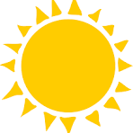

Tere tulemast!
See on veebirakenduste tunnis käsitsi kirjutatud leht!
Palun kasuta navigeerimismenüü, et leida info!
Päevapilt
Ise tehtud pilt

jQuery kasutusjuhend
*draggable* - vajuta hiirega päikesele või tekstile, hoia nuppu all ja liiguta. Päikese all näed tema asukohta (x ja y)
*animate* - vajuta nuppu "--->" ja tekst liigub paremale, nupp "<---" toob selle tagasi
*hide/show* - nupp "Peida" peidab tervitusteksti, nupp "Kuva" näitab selle uuesti
*vihjemullid* - vii hiir menüü, nuppude või päikese peale, siis ilmub väike selgitus
* oma: fadeTo - vii hiir päikese peale ja pilt muutub poolläbipaistvaks, hiir ära viies on pilt jälle hele
*animate* - vajuta nuppu "--->" ja tekst liigub paremale, nupp "<---" toob selle tagasi
*hide/show* - nupp "Peida" peidab tervitusteksti, nupp "Kuva" näitab selle uuesti
*vihjemullid* - vii hiir menüü, nuppude või päikese peale, siis ilmub väike selgitus
* oma: fadeTo - vii hiir päikese peale ja pilt muutub poolläbipaistvaks, hiir ära viies on pilt jälle hele